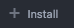

COMPLIANCE CLASS++
TOPICS TO COVER
- Chef Server Integration
- Automate Integration
- Audit Cookbook
- InSpec Editor Plugins
Chef Server Integration
TL;DR: Follow the guide
Automate Integration
TL;DR: Audit Cookbook
Audit Cookbook
Common Use Cases
Running scans locally vs from the Compliance server
Reporting scan info to Visibility and/or Compliance server
Great...but how?
Easy! Create a wrapper cookbook
First...
Grab the Audit Cookbook
Clone the audit cookbook:
git clone https://github.com/chef-cookbooks/audit.gitUpload the audit cookbook to your Chef Server:
cd audit; berks install; berks upload
Create the Wrapper Cookbook
From a directory under your knife.rb run:
chef generate cookbook rally_audit_wrapperAdd following to metadata.rb:
depends 'audit', '= 2.3.4'Add following to recipes/default.rb:
include_recipe 'audit::default'Choose collectors and/or fetchers
...but what's a collector/fetcher?
Fetchers = Where do I get my Compliance profiles from?
Collectors = Where do I send my reports to?
YOU HAVE OPTIONS!
Collector: chef-compliance
Uses Compliance as fetcher AND collector
Talks directly to Compliance
Requires that token(s) be generated for authentication
Collector: chef-visibility
Uses Automate as fetcher AND collector
Talks directly to Automate
No need for a Compliance server
Requires Automate to be configured as an Asset Store
Collector: chef-server
Uses Compliance as fetcher AND collector
Reports data through Chef Server to Compliance
Requires Compliance to be paired with Chef Server
Collector: chef-server-visibility
Uses Automate as fetcher AND collector
Reports data through Chef Server to Automate
No need for a Compliance server
Requires Automate to be configured as an Asset Store
YOU CAN USE MIX THEM!
Let's do so in our wrapper cookbook...
The Wrapper Cookbook
From within the wrapper cookbook run:
mkdir attributes; touch attributes/default.rbAdd the following to attributes/default.rb:
default['audit']['collector'] = ['chef-server', 'chef-server-visibility']
default['audit']['fetcher'] = 'chef-server'
This will send data to Compliance and Automate
...and use Compliance as the fetcher
...all through the Chef Server
Actually...just one more thing
We need to select a Compliance profile to use
Let's assume a RHEL 7 node and the CIS compliance profile
Your attributes/default.rb would be:
default['audit']['collector'] = ['chef-server', 'chef-server-visibility']
default['audit']['fetcher'] = 'chef-server'
default['audit']['profiles'] = [
{
'name': 'cis-centos7-level1',
'compliance': 'cis/cis-centos7-level1'
}
]
Almost there...
Upload the Wrapper Cookbook
cd rally_wrapper_demoberks installberks uploadConverge a Node
knife bootstrap rallydemo.vagrant.local \
-x vagrant \
-r 'recipe[rally_audit_wrapper]' \
-N rallydemo.vagrant.local \
--sudo \
--use-sudo-passwordNOM NOM DATA!!!
InSpec Editor Plugins
Installing the Atom Plugin
Open the Settings Menu
HINT: ⌘/Ctrl+,
Installing the Atom Plugin
Click 
Installing the Atom Plugin
Search for "language-inspec"
Installing the Atom Plugin
Click
Using the Atom Plugin
- Type ⌘/Ctrl+L
- Select InSpec
- ???
Using the Atom Plugin
4. PROFIT!!!
VS Code
Installing the VS Code Plugin
Click
Installing the VS Code Plugin
Search for "inspec"
Installing the VS Code Plugin
Click
Installing the VS Code Plugin
Click
Using the VS Code Plugin
- Type ⌘/Ctrl+k m
- Select InSpec
- ???
Using the VS Code Plugin
4. PROFIT!!!